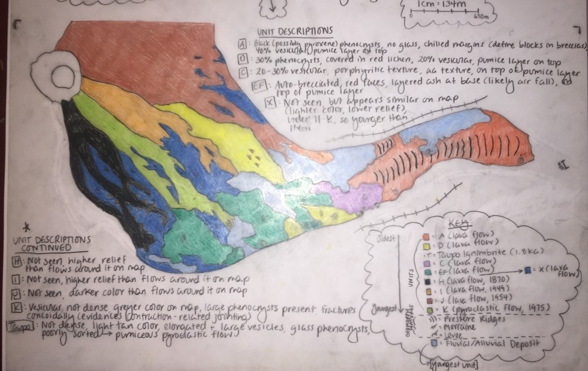
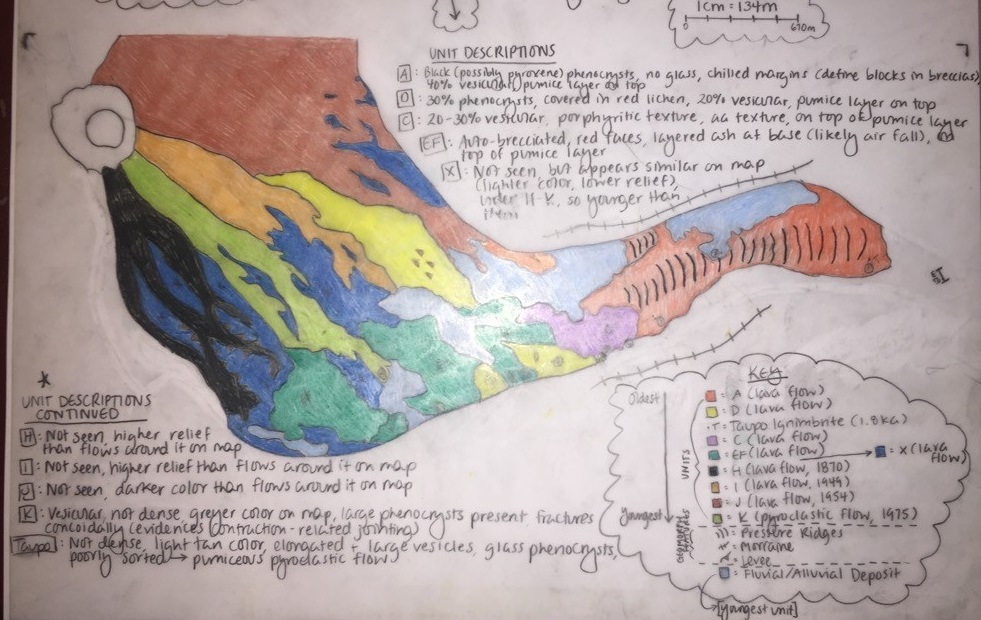

Field Trips of 2017
After a 9hr hike through the Tongariro Alpine Crossing
the next two field trips took us to an active volcano
and the vast region that was disrupted by
the recent 7.8 magnitude earthquake in Kaikoura (2016).
Quick promo of 2017
Mount Ruapehu
Physical Volcanology
This field trip gave us firsthand experience of the physical processes that influence volcanic deposits resulting from both effusive and explosive eruptions from an active volcano.
The re-emphasis of key skills such as mapping (geological, geomorphic and hazard), observations, interpretations and report writing make a return. A wider variety of settings are presented here at Mt. Ruapehu: lava flows, domes, calderas, explosive eruptions, pyroclastic flows and surges, debris avalanches, lahars, submarine volcanism and magmatic hydrothermal/geothermal systems.

 


Some images from the field trip


Thin sections of recovered rocks from Mt. Ruapehu
Kaikoura fault system
Active Tectonics and Geomorphology
On November 14th 2016 a 7.8 magnitude earthquake ruptured and produced many geomorphic features on the surface. This became an excellent opportunity to study the recent changes in surface geomorphology up close. This field trip was slightly different from the others. Where the previous field trips primarily focused on rock composition and types, this one focused on the field mapping of geomorphology, topography, structural geology, seismology, geodesy, geophysics, and geochronological dating.

Collage